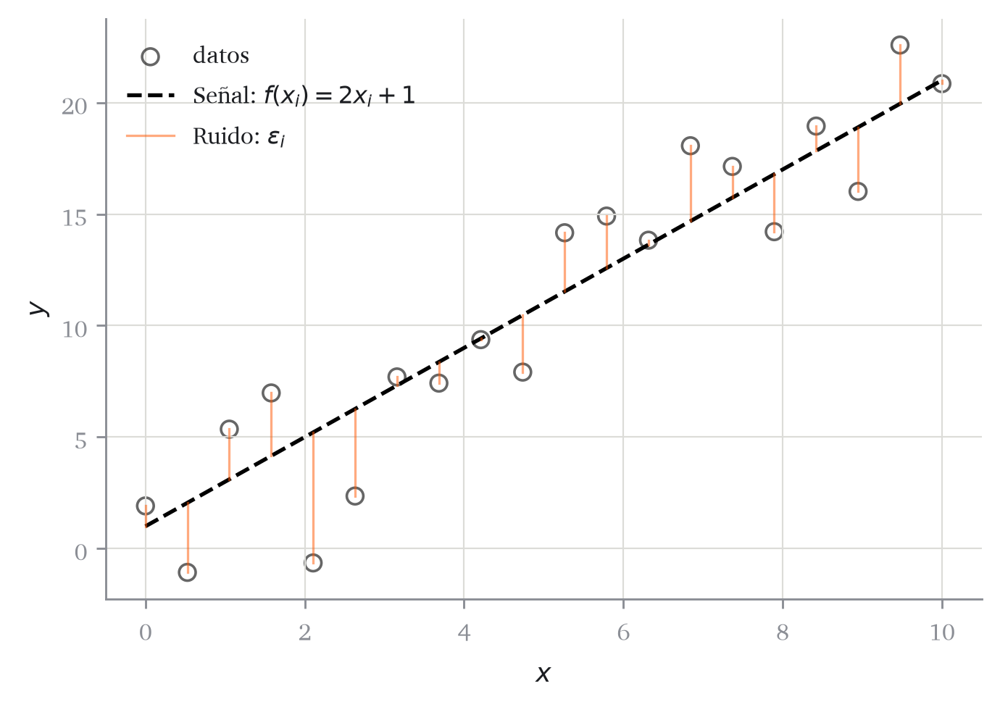
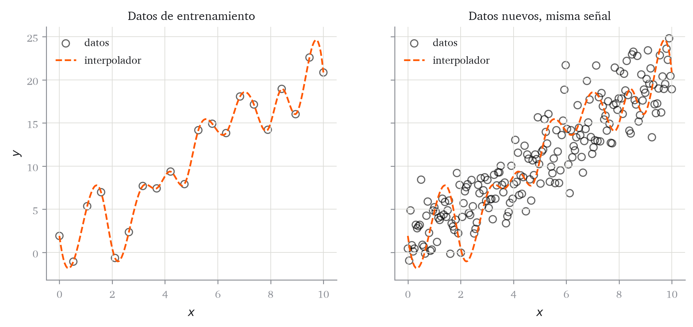
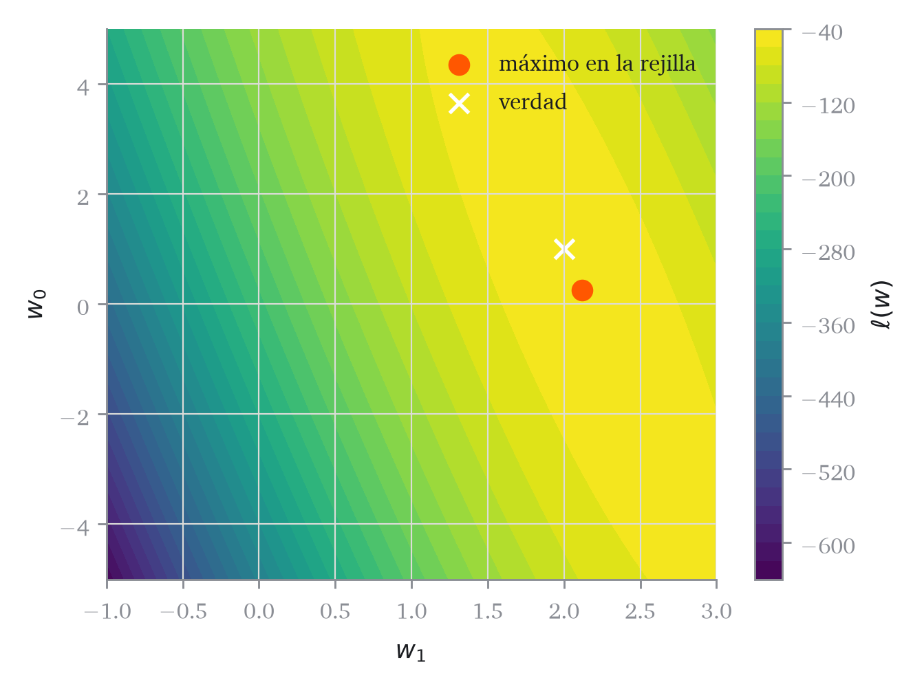

Código
import numpy as np
from matplotlib import pyplot as plt
rng = np.random.default_rng(42)
kw_puntos = dict(color="black", facecolors="none", s=40, alpha=0.6, label="datos")Sobreajuste, modelo de ruido gaussiano y verosimilitud
Abre el cuaderno para completar en clase en Google Colab.
El capítulo 1 terminó con dos cabos sueltos. El primero es el símbolo \(\approx\) de Definición 1.1: dijimos que los puntos no están sobre la curva sino alrededor, pero no dijimos cuánto ni cómo. El segundo es Figura 1.3, donde un polinomio que pasaba por los 40 puntos resultaba inservible, sin que quedara claro si aquello era mala suerte o algo inevitable.
Este capítulo cierra los dos, y en el orden contrario al que se plantearon.
Primero demostramos que lo de Figura 1.3 siempre ocurre: con clases de hipótesis suficientemente ricas, ajustar los datos a la perfección es posible en cualquier conjunto de datos, de modo que conseguirlo no informa de nada (Teorema 2.1).
Después convertimos el \(\approx\) en un modelo concreto, \(y = f(\mathbf{x}) + \varepsilon\) con \(\varepsilon\) aleatorio. En cuanto se supone algo sobre \(\varepsilon\), elegir un modelo deja de ser una cuestión de criterio y se convierte en un problema de verosimilitud, que es un problema que sabemos resolver. Ese paso es el que fija la pérdida, y con ello la segunda de las tres decisiones de Sección 1.3.
Recordemos la condición que da contenido a Definición 1.1: el error se mide sobre observaciones no vistas, es decir, distintas de las que se han usado para ajustar. Sin esa condición el problema es trivial, y el primer resultado del capítulo dice en qué sentido exacto lo es.
import numpy as np
from matplotlib import pyplot as plt
rng = np.random.default_rng(42)
kw_puntos = dict(color="black", facecolors="none", s=40, alpha=0.6, label="datos")n = 20
x = np.linspace(0, 10, n)
senal = 2.0 * x + 1.0 # la verdad que NO conocemos
ruido = rng.normal(scale=3.0, size=n)
y = senal + ruidofig, ax = plt.subplots(figsize=(6, 4))
ax.scatter(x, y, **kw_puntos)
ax.plot(x, senal, color="black", linestyle="--",
label=r"Señal: $f(x_i) = 2x_i + 1$")
for i in range(n):
etiqueta = r"Ruido: $\epsilon_i$" if i == 0 else None
ax.plot([x[i]] * 2, [senal[i], y[i]],
color="#ff5700", alpha=0.5, linewidth=0.9, label=etiqueta)
ax.set(xlabel="$x$", ylabel="$y$")
ax.legend()
plt.show()
Definición 2.1 (Modelo señal + ruido) \[ y_i= f(\mathbf{x}_i) + \varepsilon_i, \qquad \varepsilon_i \text{ iid}, \quad \mathbb{E}\!\left[ \varepsilon_i \right] = 0. \tag{2.1}\]
A \(f\) la llamamos señal y a \(\varepsilon_i\) ruido.
Lo que queremos aprender es \(f\), no los valores \(y_i\).
Definición 2.2 (Error de entrenamiento y error de test) Dado un conjunto \(\mathcal{S}\) y un modelo ajustado \(\hat{f}\), \[ \hat{R}_{\mathcal{S}}(\hat{f}) = \frac{1}{\left\lvert \mathcal{S} \right\rvert} \sum_{i \in \mathcal{S}} \left( y_i- \hat{f}(\mathbf{x}_i) \right)^2 . \]
Definición 2.3 (Sobreajuste) Se produce sobreajuste cuando aumentar la complejidad del modelo mejora su error de entrenamiento y empeora su error de test.
El siguiente resultado no suele aparecer en los cursos introductorios.
Teorema 2.1 (Interpolación exacta) Sean \(x_1, \dots, x_{n} \in \mathbb{R}\) distintos dos a dos y sean \(y_1, \dots, y_{n} \in \mathbb{R}\) cualesquiera. Entonces existe un polinomio \(P\) de grado \(\leq n- 1\) tal que \(P(x_i) = y_i\) para todo \(i\); es decir, con error de entrenamiento exactamente cero.
Demostración. Construimos la solución. Para cada \(j\) defínase la base de Lagrange \[ \ell_j(x) = \prod_{k \neq j} \frac{x - x_k}{x_j - x_k}, \] que está bien definida porque los \(x_k\) son distintos. Evaluando, si \(i = j\) todos los factores valen \(1\), y si \(i \neq j\) el factor \(k = i\) se anula; por tanto \(\ell_j(x_i) = \delta_{ij}\). Tomando \[ P(x) = \sum_{j=1}^{n} y_j\, \ell_j(x) \] se obtiene \(P(x_i) = \sum_j y_j \delta_{ij} = y_i\). Cada \(\ell_j\) tiene grado \(n- 1\), luego \(P\) también.
Lo comprobamos numéricamente. Interpolamos los 20 puntos y después generamos datos nuevos con la misma señal y ruido distinto.
from scipy import interpolate
f_int = interpolate.interp1d(x, y, kind="cubic")
x_denso = np.linspace(0, 10, 200)
y_int = f_int(x_denso)
fig, ax = plt.subplots(1, 2, figsize=(10, 4), sharey=True)
ax[0].scatter(x, y, **kw_puntos)
ax[0].plot(x_denso, y_int, color="#ff5700", linestyle="--", label="interpolador")
ax[0].set(title="Datos de entrenamiento", xlabel="$x$", ylabel="$y$")
ax[0].legend()
y_nuevo = 2.0 * x_denso + 1.0 + rng.normal(scale=3.0, size=200)
ax[1].scatter(x_denso, y_nuevo, **kw_puntos)
ax[1].plot(x_denso, y_int, color="#ff5700", linestyle="--", label="interpolador")
ax[1].set(title="Datos nuevos, misma señal", xlabel="$x$")
ax[1].legend()
plt.show()
Si queremos aprender \(f\) en Ecuación 2.1, necesitamos poder hablar matemáticamente de \(\varepsilon_i\). Supondremos que el ruido es gaussiano.
Definición 2.4 (Densidad normal) \[ p(x; \mu, \sigma) = \frac{1}{\sigma\sqrt{2\pi}} \exp\left( -\frac{(x-\mu)^2}{2\sigma^2} \right). \tag{2.2}\]
Corolario 2.1 (Del modelo de ruido a la distribución del objetivo) \(\varepsilon_i \sim \mathcal{N}(0, \sigma^2)\) si y solo si \(y_i\,\vert\,\mathbf{x}_i \sim \mathcal{N}(f(\mathbf{x}_i), \sigma^2)\).
Demostración. Teorema 1 con \(c = f(\mathbf{x}_i)\).
El corolario convierte una hipótesis sobre los errores en una distribución para los datos. A una distribución se le puede calcular la verosimilitud, y eso es lo que haremos a continuación.
Definición 2.5 (Modelo lineal-gaussiano) Con \(p= 1\): \(y_i\sim \mathcal{N}(w_0+ w_1 x_i,\ \sigma^2)\), de forma independiente.
Definición 2.6 (Verosimilitud y log-verosimilitud) \[ L(\boldsymbol{w}) = \prod_{i=1}^{n} p\left(y_i;\ f(\mathbf{x}_i),\ \sigma\right), \qquad \ell(\boldsymbol{w}) = \sum_{i=1}^{n} \log p\left(y_i;\ f(\mathbf{x}_i),\ \sigma\right). \]
Lema 2.1 (El logaritmo preserva el argmax) Si \(g\) es estrictamente creciente, \(\mathop{\mathrm{arg\,max}}_{\boldsymbol{w}} g(L(\boldsymbol{w})) = \mathop{\mathrm{arg\,max}}_{\boldsymbol{w}} L(\boldsymbol{w})\). En particular \(\mathop{\mathrm{arg\,max}}L= \mathop{\mathrm{arg\,max}}\ell= \mathop{\mathrm{arg\,min}}(-\ell)\).
Demostración. Si \(\boldsymbol{w}^{\star}\) maximiza \(L\) entonces \(L(\boldsymbol{w}) \leq L(\boldsymbol{w}^\star)\) para todo \(\boldsymbol{w}\), y aplicando \(g\) creciente, \(g(L(\boldsymbol{w})) \leq g(L(\boldsymbol{w}^\star))\). El recíproco es idéntico usando que \(g\) es estrictamente creciente.
Definición 2.7 (Estimación máximo-verosímil) \(\hat{\boldsymbol{w}}= \mathop{\mathrm{arg\,max}}_{\boldsymbol{w}} L(\boldsymbol{w}) = \mathop{\mathrm{arg\,min}}_{\boldsymbol{w}} \left(-\ell(\boldsymbol{w})\right)\).
Empezamos por una búsqueda exhaustiva en una rejilla, para evaluar su coste computacional.
def densidad_normal(x, mu, sigma):
return np.exp(-0.5 * ((x - mu) / sigma) ** 2) / (sigma * np.sqrt(2 * np.pi))
def log_verosimilitud(w0, w1, x, y, sigma=3.0):
return np.log(densidad_normal(y, w0 + w1 * x, sigma)).sum()rejilla_w0 = np.linspace(-5, 5, 60)
rejilla_w1 = np.linspace(-1, 3, 60)
L = np.array([[log_verosimilitud(a, b, x, y) for b in rejilla_w1] for a in rejilla_w0])
fig, ax = plt.subplots(figsize=(5.5, 4))
cs = ax.contourf(rejilla_w1, rejilla_w0, L, levels=30)
i, j = np.unravel_index(L.argmax(), L.shape)
ax.scatter([rejilla_w1[j]], [rejilla_w0[i]], color="#ff5700", s=60, label="máximo en la rejilla")
ax.scatter([2.0], [1.0], color="white", marker="x", s=60, label="verdad")
ax.set(xlabel="$w_1$", ylabel="$w_0$")
ax.legend()
plt.colorbar(cs, ax=ax, label=r"$\ell(w)$")
plt.show()
Con dos parámetros y 60 valores cada uno son 3.600 evaluaciones. Con \(p= 20\) parámetros serían \(60^{20}\), un número de evaluaciones inabordable. Hace falta cálculo, y eso es el capítulo 5.
“Mi \(R^2\) de entrenamiento es 0,999”
Es exactamente Teorema 2.1 en acción. Añade grados de libertad suficientes y cualquiera consigue ese número. La pregunta correcta no es cuánto ajusta sino sobre qué datos se ha medido. Volveremos sobre esto con el aparato completo en el capítulo 8.
| Matemáticas | Código | Nota |
|---|---|---|
| \(n\) | n, X.shape[0] |
número de observaciones |
| \(p\) | p, X.shape[1] |
número de variables |
| \(\boldsymbol{w}\) | w |
vector de coeficientes |
| \(\sigma\) | sigma |
escala del ruido |
| \(f(\mathbf{x}_i)\) | f(x) |
la señal |
| \(\varepsilon_i\) | ruido |
lo que no explicamos |
Ejercicio 2.1 Sean los puntos \((1, 3)\), \((2, 5)\), \((4, 2)\). Construya explícitamente el polinomio interpolador de Lagrange y compruebe que pasa por los tres puntos.
Ejercicio 2.2 Tres titulares de prensa afirman: (a) “el modelo predice el impago con un 99 % de acierto”; (b) “hemos reducido el error a cero”; (c) “validado sobre 10 millones de registros”. Para cada uno, diga qué información falta para poder juzgarlo.
Ejercicio 2.3 Suponga \(\varepsilon_i \sim \mathcal{N}(0, \sigma^2)\). Escriba la log-verosimilitud de una única observación y dibuje, sin calcular nada, cómo cambia al alejarse \(y_i\) de \(f(\mathbf{x}_i)\).
© Roi Naveiro, CUNEF Universidad, 2026